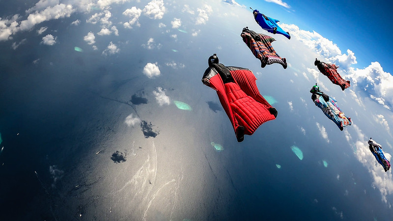

Vingedrakt flyvning
Vingedrakt flyvning er en ekstrem sport der utøvere hopper fra høye steder iført spesiallagde drakter som lar dem gli gjennom luften. Det er en adrenalinfylt opplevelse som kombinerer fallskjermhopping med flyging, og krever presisjon og god fysisk form for å være trygg.
